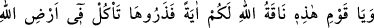
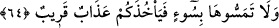

Mesnevî’de şöyle denilir:
Bu tereddüd, Allah yolunun tuzağı, sarp yeridir.
Ayağı bağlı olmayan kişi ne mutlu kişidir.
O tereddüde düşmeden doğru yolda yürür gider.
Sen de yol bilmiyorsan izlerini bul da, o ize düş, yürü.
Ceylanın izini izle de her şeyden kurtul, yürü;
O iz vasıtasıyla miske ulaşırsın...
Biz kendi zamanımızda bazı şahısların peygamber vârisi ve Rablerinden bir delil
üzere bulunan şeyhler arayıp bulamadıklarını gördük. Bu şahısların taleplerinde zaaf ve
tereddüd, inanç ve himmetlerinde dağınıklık bulunduğu için böyle oluyor. Çünkü tâlib
basiret üzere hareket etmediği zaman basiret ehlini bulamaz. İsterse gözünün önünde
olsun. Aksine hüsrânı, ziyanı artar. Ne güzel söylenmiştir: “Kör görmese de güneş yine
güneştir.” Önceki ümmetlerin azgınlarını görmez misin?! Huccet ve delilleri apaçık
ortaya çıkmasına rağmen nasıl peygamberleri inkar etmişlerdi!
Allah’ım senden bizi korumanı ve muvaffak kılmanı niyaz ederiz.
64. “Ey kavmim, işte size mucize olarak Allah’ın devesi. Bırakın onu Allah’ın
arzında yesin (içsin). Ona bir kötülük dokundurmayın, yoksa sizi yakın bir azap
yakalar.”
Hz. Peygamber (a.s.)’ın şöyle dediği rivayet edilir: “Salih (a.s.) kavmini Allah’a
davet edip kavmi de kendisini yalanlayınca göğsü daraldı ve aralarından ayrılmak için
Rabb’inden izin istedi. Allah Teâlâ izin verince aralarından ayrıldı ve bir deniz sahiline
gitti. Birden gözüne su üzerinde yürüyen bir adam ilişti. Adama:
“–Sen de kimsin?” diye sordu. Adamdan şu cevabı aldı:
“–Allah’ın kullarındanım. Benden başka tüm yolcuları kâfir olan bir gemide iken
Allah Teâlâ beni kurtarıp onları helâk etti. Kurtulup bir adaya çıktım. Orada ibadet
ediyorum. Bazen çıkıp Allah’ın vereceği rızkımı arıyor, sonra tekrar yerime
dönüyorum.”
Salih (a.s.) yoluna devam etti. Büyük bir tepeye vardı. Orada bir adam görüp yanına
gitti. Adama selâm verdi. Adam da Salih (a.s.)’ın selâmını aldı. Salih (a.s.):
“–Sen kimsin?” diye sordu. Adam:
“–Burada benim dışımdaki bütün ferdleri kâfir olan bir köy vardı. Allah beni kurtarıp
onları helak etti. Ben de bunun üzerine ölünceye dek burada Allah’a kulluk etmeyi